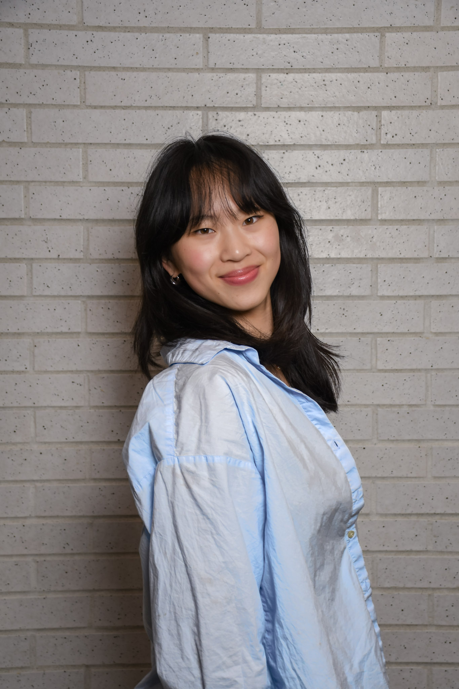

I turn messy, half-formed problems into things that actually ship. I built a venture capital operating system that placed 3rd at UBC's Product Heist, and dashboards that are now used inside a Big Five bank. Give me the vague brief nobody wants to touch and I'll figure out what it's actually asking for.

At UBC PMC's Product Heist 2025, my team built a system that pulls together AI research, relationship mapping, and startup scoring for VC teams. I led the product thinking, from framing the problem to the clickable prototype.
A mix of product case work, hackathon builds, and independent projects. Some I built alone at 2am, some with a team on a 36-hour clock.
Validated SRRs and PCRs with DXC Cloud Networks, and reviewed vendor contracts and T&Cs for vendor management and risk mitigation. Also built a Power BI dashboard from scratch to make sense of years of contractual data.
Own communications portfolio management, including web development. Led organization of SUS's first-ever hackathon, Hack the Coast, with 183 hackers. It's a community that makes up over 25% of the faculty's 10,000 students but rarely gets events built for it.
Organize Computer Science workshops for underrepresented youth.
Spearheading logistics for the WICS x WIDS 24-hour hackathon for underrepresented genders in tech.
Lead an executive team organizing SafeHacks, a BC-wide in-person high school hackathon.
Run shifts and handle customer service on the retail floor.
Outside of work: dance, yoga and pilates, snowboarding, painting, and slowly making my way through When Nietzsche Wept.